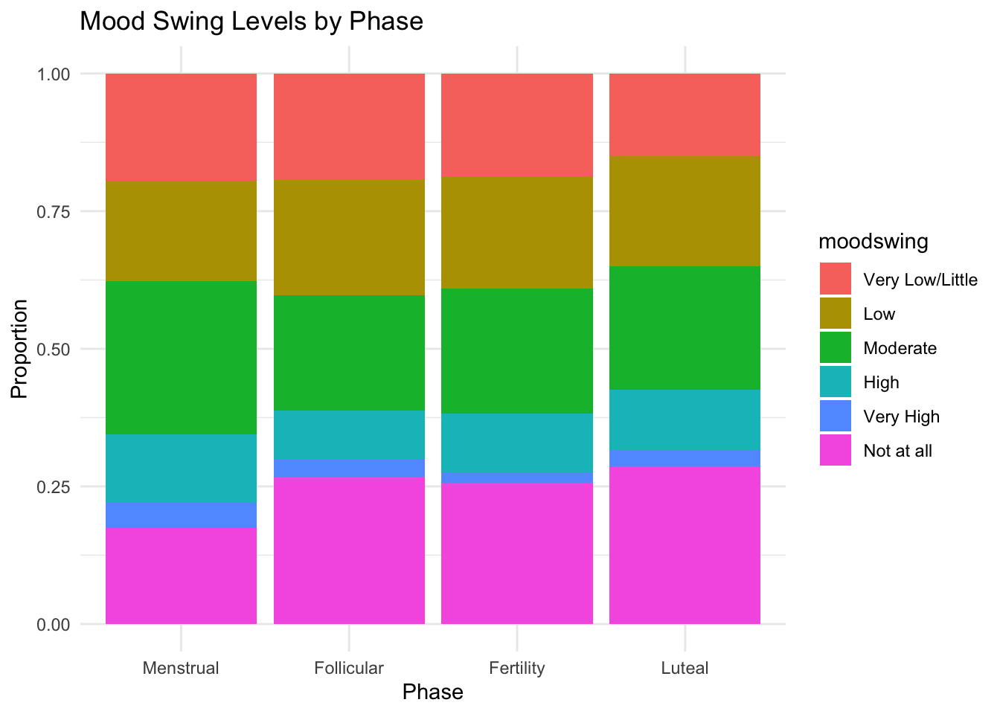

hormone
2025-11-17
library(tidyverse)## ── Attaching core tidyverse packages ──────────────────────── tidyverse 2.0.0 ──
## ✔ dplyr 1.1.4 ✔ readr 2.1.5
## ✔ forcats 1.0.0 ✔ stringr 1.5.1
## ✔ ggplot2 4.0.0 ✔ tibble 3.2.1
## ✔ lubridate 1.9.4 ✔ tidyr 1.3.1
## ✔ purrr 1.0.2
## ── Conflicts ────────────────────────────────────────── tidyverse_conflicts() ──
## ✖ dplyr::filter() masks stats::filter()
## ✖ dplyr::lag() masks stats::lag()
## ℹ Use the conflicted package (<http://conflicted.r-lib.org/>) to force all conflicts to become errorshormone=
read_csv("data/hormones_and_selfreport.csv")## Rows: 5659 Columns: 22
## ── Column specification ────────────────────────────────────────────────────────
## Delimiter: ","
## chr (15): phase, flow_volume, flow_color, appetite, exerciselevel, headaches...
## dbl (6): id, study_interval, day_in_study, lh, estrogen, pdg
## lgl (1): is_weekend
##
## ℹ Use `spec()` to retrieve the full column specification for this data.
## ℹ Specify the column types or set `show_col_types = FALSE` to quiet this message.##yue’s interest: phase, lh, estrogen, moodswing, fatigue
my_int=
hormone |>
select(id,phase, lh, estrogen,fatigue,moodswing)|>
mutate(
phase = factor(phase, levels = c("Follicular", "Fertility", "Luteal", "Menstrual")),
fatigue = factor(fatigue,
levels = c("Low", "Moderate", "High", "Very High")),
moodswing = factor(moodswing,
levels = c("Very Low/Little", "Low", "Moderate", "High","Very High","Not at all"))
)
phase_order <- c("Menstrual", "Follicular", "Fertility", "Luteal")first, explore relationship between LH and estrogen
my_int_avg=
my_int|>
group_by(phase)|>
summarise(
estrogen_mean = mean(estrogen, na.rm = TRUE),
lh_mean = mean(lh, na.rm = TRUE)
)|>
mutate(phase = factor(phase, levels = phase_order))|>
filter(!is.na(phase))
# Plot the summarized data
ggplot(my_int_avg, aes(x = phase)) +
geom_line(aes(y = estrogen_mean, color = "Estrogen", group = 1), size = 1) +
geom_line(aes(y = lh_mean, color = "LH", group = 1), size = 1) +
geom_point(aes(y = estrogen_mean, color = "Estrogen"), size = 3) +
geom_point(aes(y = lh_mean, color = "LH"), size = 3) +
labs(
title = "Estrogen and LH Levels Across Menstrual Cycle Phases",
x = "Menstrual Cycle Phase",
y = "Hormone Level",
color = "Hormone"
) +
scale_color_manual(values = c("Estrogen" = "red", "LH" = "blue")) +
theme_minimal() +
theme(axis.text.x = element_text(angle = 45, hjust = 1))## Warning: Using `size` aesthetic for lines was deprecated in ggplot2 3.4.0.
## ℹ Please use `linewidth` instead.
## This warning is displayed once every 8 hours.
## Call `lifecycle::last_lifecycle_warnings()` to see where this warning was
## generated. #estrogen surge at fertility(actually it should be called ovulation) #lh
also peak at ovulation
#estrogen surge at fertility(actually it should be called ovulation) #lh
also peak at ovulation
fatigue and moodswing
my_int=
my_int|>
filter(!is.na(phase))
fatigue_summary <- my_int %>%
group_by(phase) %>%
summarise(
n = n(),
avg_fatigue = mean(as.numeric(fatigue), na.rm = TRUE),
avg_moodswing = mean(as.numeric(moodswing), na.rm = TRUE),
.groups = 'drop'
)
mood_summary <- my_int %>%
group_by(phase) %>%
count(moodswing) %>%
mutate(percentage = n / sum(n) * 100)
fatigue_summary## # A tibble: 4 × 4
## phase n avg_fatigue avg_moodswing
## <fct> <int> <dbl> <dbl>
## 1 Follicular 1386 2.26 3.41
## 2 Fertility 1281 2.25 3.49
## 3 Luteal 1912 2.21 3.58
## 4 Menstrual 1079 2.33 3.11mood_summary## # A tibble: 28 × 4
## # Groups: phase [4]
## phase moodswing n percentage
## <fct> <fct> <int> <dbl>
## 1 Follicular Very Low/Little 208 15.0
## 2 Follicular Low 146 10.5
## 3 Follicular Moderate 140 10.1
## 4 Follicular High 53 3.82
## 5 Follicular Very High 21 1.52
## 6 Follicular Not at all 271 19.6
## 7 Follicular <NA> 547 39.5
## 8 Fertility Very Low/Little 175 13.7
## 9 Fertility Low 112 8.74
## 10 Fertility Moderate 128 9.99
## # ℹ 18 more rows# Remove NA phases AND NA moodswing/fatigue values
my_int_clean <- my_int |>
filter(!is.na(phase) & !is.na(moodswing) & !is.na(fatigue))
# Now recalculate summaries
fatigue_summary <- my_int_clean %>%
group_by(phase) %>%
summarise(
n = n(),
avg_fatigue = mean(as.numeric(fatigue), na.rm = TRUE),
avg_moodswing = mean(as.numeric(moodswing), na.rm = TRUE),
.groups = 'drop'
)
mood_summary <- my_int_clean %>%
group_by(phase) %>%
count(moodswing) %>%
mutate(percentage = n / sum(n) * 100)
fatigue_summary## # A tibble: 4 × 4
## phase n avg_fatigue avg_moodswing
## <fct> <int> <dbl> <dbl>
## 1 Follicular 603 2.26 3.36
## 2 Fertility 507 2.25 3.34
## 3 Luteal 811 2.21 3.53
## 4 Menstrual 482 2.32 3.17mood_summary## # A tibble: 24 × 4
## # Groups: phase [4]
## phase moodswing n percentage
## <fct> <fct> <int> <dbl>
## 1 Follicular Very Low/Little 116 19.2
## 2 Follicular Low 127 21.1
## 3 Follicular Moderate 126 20.9
## 4 Follicular High 53 8.79
## 5 Follicular Very High 20 3.32
## 6 Follicular Not at all 161 26.7
## 7 Fertility Very Low/Little 95 18.7
## 8 Fertility Low 103 20.3
## 9 Fertility Moderate 115 22.7
## 10 Fertility High 54 10.7
## # ℹ 14 more rowsggplot(my_int_clean, aes(x = factor(phase, levels = phase_order), fill = fatigue)) +
geom_bar(position = "fill") +
labs(title = "Fatigue Levels by Phase",
x = "Phase", y = "Proportion") +
theme_minimal()
ggplot(my_int_clean, aes(x = factor(phase, levels = phase_order), fill = moodswing)) +
geom_bar(position = "fill") +
labs(title = "Mood Swing Levels by Phase",
x = "Phase", y = "Proportion") +
theme_minimal()
##this two bar graph show the proportion of fatigue and moodswing among four phases, but they are hard to read.
#so i aim to change the catogorical value (low, moderate, high) to 1,2,3, and so on. i want to sum and avrage. to show a typical cahnge of fatigue and mood in four phases.
# Convert moodswing and fatigue to numeric intensity scores
my_int_numeric <- my_int_clean %>%
mutate(
moodswing_num = case_when(
moodswing == "Very Low/Little" ~ 1,
moodswing == "Low" ~ 2,
moodswing == "Moderate" ~ 3,
moodswing == "High" ~ 4,
moodswing == "Very High" ~ 5,
TRUE ~ NA_real_
),
fatigue_num = case_when(
fatigue == "Low" ~ 1,
fatigue == "Moderate" ~ 2,
fatigue == "High" ~ 3,
fatigue == "Very High" ~ 4,
TRUE ~ NA_real_
)
)
# Calculate average intensity by phase
symptom_means <- my_int_numeric %>%
group_by(phase = factor(phase, levels = phase_order)) %>%
summarise(
avg_moodswing = mean(moodswing_num, na.rm = TRUE),
avg_fatigue = mean(fatigue_num, na.rm = TRUE),
n = n(),
.groups = 'drop'
)
symptom_means## # A tibble: 4 × 4
## phase avg_moodswing avg_fatigue n
## <fct> <dbl> <dbl> <int>
## 1 Menstrual 2.57 2.32 482
## 2 Follicular 2.40 2.26 603
## 3 Fertility 2.42 2.25 507
## 4 Luteal 2.54 2.21 811# Mood swing single line plot
ggplot(symptom_means, aes(x = phase, y = avg_moodswing, group = 1)) +
geom_line(color = "purple", size = 1.5, alpha = 0.7) +
geom_point(color = "purple", size = 3) +
geom_text(aes(label = round(avg_moodswing, 2)), vjust = -1, size = 4, fontface = "bold") +
labs(
title = "Average Mood Swing Intensity Across Menstrual Cycle Phases",
subtitle = "Higher values indicate more severe mood swings (Scale: 1-4)",
x = "Menstrual Cycle Phase",
y = "Average Mood Swing Intensity"
) +
ylim(1, 4) +
theme_minimal() +
theme(
axis.text.x = element_text(angle = 45, hjust = 1, size = 11),
plot.title = element_text(face = "bold"),
panel.grid.major = element_line(color = "grey90")
)
# Fatigue single line plot
ggplot(symptom_means, aes(x = phase, y = avg_fatigue, group = 1)) +
geom_line(color = "darkorange", size = 1.5, alpha = 0.7) +
geom_point(color = "darkorange", size = 3) +
geom_text(aes(label = round(avg_fatigue, 2)), vjust = -1, size = 4, fontface = "bold") +
labs(
title = "Average Fatigue Intensity Across Menstrual Cycle Phases",
subtitle = "Higher values indicate more severe fatigue (Scale: 1-4)",
x = "Menstrual Cycle Phase",
y = "Average Fatigue Intensity"
) +
ylim(1, 4) +
theme_minimal() +
theme(
axis.text.x = element_text(angle = 45, hjust = 1, size = 11),
plot.title = element_text(face = "bold"),
panel.grid.major = element_line(color = "grey90")
)
for the test, i want to test if moodswing and fatigue have statsitically difference between those four phases.
# Kruskal-Wallis Test (non-parametric alternative to ANOVA)
kruskal_mood <- kruskal.test(moodswing_num ~ phase, data = my_int_numeric)
kruskal_fatigue <- kruskal.test(fatigue_num ~ phase, data = my_int_numeric)
cat("Mood Swing - Kruskal-Wallis Test:\n")## Mood Swing - Kruskal-Wallis Test:print(kruskal_mood)##
## Kruskal-Wallis rank sum test
##
## data: moodswing_num by phase
## Kruskal-Wallis chi-squared = 7.4651, df = 3, p-value = 0.05846cat("\nFatigue - Kruskal-Wallis Test:\n")##
## Fatigue - Kruskal-Wallis Test:print(kruskal_fatigue)##
## Kruskal-Wallis rank sum test
##
## data: fatigue_num by phase
## Kruskal-Wallis chi-squared = 4.3521, df = 3, p-value = 0.2259# Install and load required package for post-hoc tests
if (!require(dunn.test)) install.packages("dunn.test")## Loading required package: dunn.testlibrary(dunn.test)
# Dunn's post-hoc test with Bonferroni correction
dunn_mood <- dunn.test(my_int_numeric$moodswing_num,
my_int_numeric$phase,
method = "bonferroni")## Kruskal-Wallis rank sum test
##
## data: x and group
## Kruskal-Wallis chi-squared = 7.4651, df = 3, p-value = 0.06
##
##
## Comparison of x by group
## (Bonferroni)
## Col Mean-|
## Row Mean | Fertilit Follicul Luteal
## ---------+---------------------------------
## Follicul | 0.462187
## | 1.0000
## |
## Luteal | -1.492312 -2.076564
## | 0.4069 0.1135
## |
## Menstrua | -1.717792 -2.255491 -0.379275
## | 0.2575 0.0723 1.0000
##
## alpha = 0.05
## Reject Ho if p <= alpha/2dunn_fatigue <- dunn.test(my_int_numeric$fatigue_num,
my_int_numeric$phase,
method = "bonferroni")## Kruskal-Wallis rank sum test
##
## data: x and group
## Kruskal-Wallis chi-squared = 4.3521, df = 3, p-value = 0.23
##
##
## Comparison of x by group
## (Bonferroni)
## Col Mean-|
## Row Mean | Fertilit Follicul Luteal
## ---------+---------------------------------
## Follicul | -0.184470
## | 1.0000
## |
## Luteal | 0.694468 0.937920
## | 1.0000 1.0000
## |
## Menstrua | -1.260487 -1.130506 -2.077905
## | 0.6225 0.7748 0.1132
##
## alpha = 0.05
## Reject Ho if p <= alpha/2cat("\nMood Swing - Dunn's Post-Hoc Test:\n")##
## Mood Swing - Dunn's Post-Hoc Test:print(dunn_mood)## $chi2
## [1] 7.465111
##
## $Z
## [1] 0.4621873 -1.4923129 -2.0765647 -1.7177924 -2.2554913 -0.3792752
##
## $P
## [1] 0.32197351 0.06780857 0.01892087 0.04291725 0.01205126 0.35224174
##
## $P.adjusted
## [1] 1.00000000 0.40685143 0.11352525 0.25750349 0.07230753 1.00000000
##
## $comparisons
## [1] "Fertility - Follicular" "Fertility - Luteal" "Follicular - Luteal"
## [4] "Fertility - Menstrual" "Follicular - Menstrual" "Luteal - Menstrual"cat("\nFatigue - Dunn's Post-Hoc Test:\n")##
## Fatigue - Dunn's Post-Hoc Test:print(dunn_fatigue)## $chi2
## [1] 4.35211
##
## $Z
## [1] -0.1844703 0.6944687 0.9379209 -1.2604877 -1.1305062 -2.0779056
##
## $P
## [1] 0.42682228 0.24369416 0.17414254 0.10374674 0.12913149 0.01885903
##
## $P.adjusted
## [1] 1.0000000 1.0000000 1.0000000 0.6224805 0.7747890 0.1131542
##
## $comparisons
## [1] "Fertility - Follicular" "Fertility - Luteal" "Follicular - Luteal"
## [4] "Fertility - Menstrual" "Follicular - Menstrual" "Luteal - Menstrual"pairwise_mood <- pairwise.wilcox.test(my_int_numeric$moodswing_num,
my_int_numeric$phase,
p.adjust.method = "bonferroni")
pairwise_fatigue <- pairwise.wilcox.test(my_int_numeric$fatigue_num,
my_int_numeric$phase,
p.adjust.method = "bonferroni")
cat("\nMood Swing - Pairwise Wilcoxon Tests:\n")##
## Mood Swing - Pairwise Wilcoxon Tests:print(pairwise_mood)##
## Pairwise comparisons using Wilcoxon rank sum test with continuity correction
##
## data: my_int_numeric$moodswing_num and my_int_numeric$phase
##
## Follicular Fertility Luteal
## Fertility 1.00 - -
## Luteal 0.22 0.79 -
## Menstrual 0.16 0.52 1.00
##
## P value adjustment method: bonferronicat("\nFatigue - Pairwise Wilcoxon Tests:\n")##
## Fatigue - Pairwise Wilcoxon Tests:print(pairwise_fatigue)##
## Pairwise comparisons using Wilcoxon rank sum test with continuity correction
##
## data: my_int_numeric$fatigue_num and my_int_numeric$phase
##
## Follicular Fertility Luteal
## Fertility 1.00 - -
## Luteal 1.00 1.00 -
## Menstrual 1.00 1.00 0.22
##
## P value adjustment method: bonferroni# Calculate effect size (epsilon-squared for Kruskal-Wallis)
if (!require(rcompanion)) install.packages("rcompanion")## Loading required package: rcompanionlibrary(rcompanion)
effect_size_mood <- epsilonSquared(my_int_numeric$moodswing_num, my_int_numeric$phase)
effect_size_fatigue <- epsilonSquared(my_int_numeric$fatigue_num, my_int_numeric$phase)
cat("Effect Sizes:\n")## Effect Sizes:cat("Mood Swing - Epsilon-squared:", round(effect_size_mood, 3), "\n")## Mood Swing - Epsilon-squared: 0.003cat("Fatigue - Epsilon-squared:", round(effect_size_fatigue, 3), "\n")## Fatigue - Epsilon-squared: 0.002# Interpret effect size
interpret_effect_size <- function(epsilon2) {
if (epsilon2 < 0.01) cat("Negligible effect\n")
else if (epsilon2 < 0.04) cat("Small effect\n")
else if (epsilon2 < 0.16) cat("Moderate effect\n")
else cat("Large effect\n")
}
cat("Mood Swing effect size: ")## Mood Swing effect size:interpret_effect_size(effect_size_mood)## Negligible effectcat("Fatigue effect size: ")## Fatigue effect size:interpret_effect_size(effect_size_fatigue)## Negligible effect